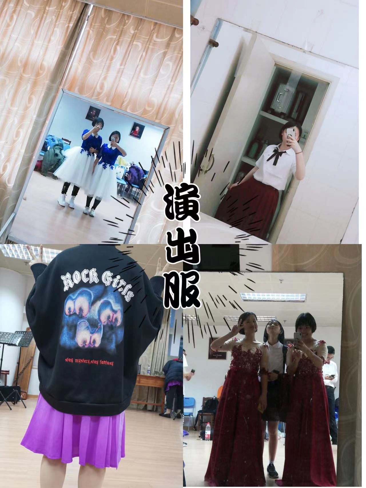
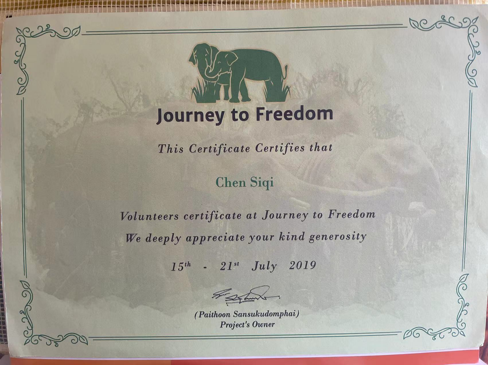
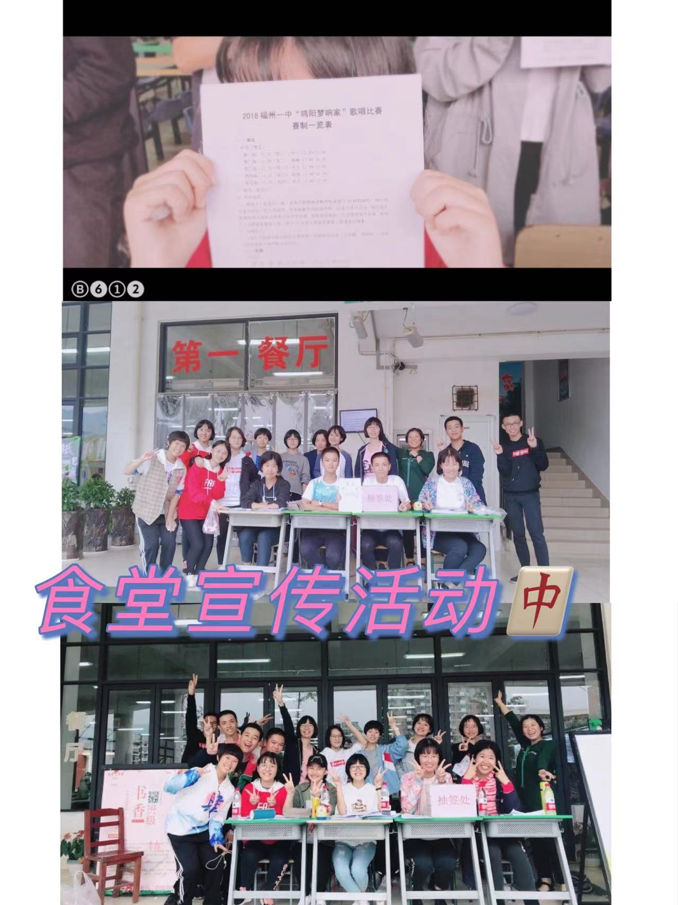

- ←←←物种名：陈思琪 / Stacy Chen
- ▢又称：
- ▲当地颇为英俊的买可乐职业选手
- ▲被数理化终结者
- ▲职业休息师
- ▲著名奶茶鉴定家
 福州市，简称“榕”，别称榕城，是福建省省会，国务院批复确定的海峡西岸经济区中心城市之一、滨江滨海生态园林城市。全市共辖6个市辖区、1个县级市、6个县，总面积11968平方千米，建成区面积416平方公里。根据第七次人口普查数据，截至2020年11月1日零时，福州市常住人口为8291268人。2020年，福州实现地区生产总值10020.02亿元，比上年增长5.1%。
福州地处中国华东地区、福建东部、闽江下游及沿海地区，中国东部战区陆军机关驻地，是中国东南沿海重要都市、首批对外开放的沿海开放城市、海洋经济发展示范区，海上丝绸之路门户以及中国（福建）自由贸易试验区组成部分；是近代中国最早开放的五个通商口岸之一。
福州是国家历史文化名城，最早在秦汉时期名为“冶”，而后因为境内一座福山而更名“福州”。建城于公元前202年，历史上曾长期作为福建的政治中心。福州马尾是中国近代海军的摇篮、中国船政文化的发祥地；曾获中国优秀旅游城市、国家卫生城市、滨江滨海生态园林城市、国家环保模范城、全国双拥模范城市、全国文明城市等称号。
2021年，《福建省国民经济和社会发展第十四个五年规划和二〇三五年远景目标纲要》，高水平建设福州都市圈，鼓励福州创建国家中心城市，推进福州新区加快建设两岸交流合作重要承载区、改革创新示范区、生态文明先行区、扩大对外开放重要门户、东南沿海重要现代产业基地。
如需更多了解，请点击！<<超链接
福州市，简称“榕”，别称榕城，是福建省省会，国务院批复确定的海峡西岸经济区中心城市之一、滨江滨海生态园林城市。全市共辖6个市辖区、1个县级市、6个县，总面积11968平方千米，建成区面积416平方公里。根据第七次人口普查数据，截至2020年11月1日零时，福州市常住人口为8291268人。2020年，福州实现地区生产总值10020.02亿元，比上年增长5.1%。
福州地处中国华东地区、福建东部、闽江下游及沿海地区，中国东部战区陆军机关驻地，是中国东南沿海重要都市、首批对外开放的沿海开放城市、海洋经济发展示范区，海上丝绸之路门户以及中国（福建）自由贸易试验区组成部分；是近代中国最早开放的五个通商口岸之一。
福州是国家历史文化名城，最早在秦汉时期名为“冶”，而后因为境内一座福山而更名“福州”。建城于公元前202年，历史上曾长期作为福建的政治中心。福州马尾是中国近代海军的摇篮、中国船政文化的发祥地；曾获中国优秀旅游城市、国家卫生城市、滨江滨海生态园林城市、国家环保模范城、全国双拥模范城市、全国文明城市等称号。
2021年，《福建省国民经济和社会发展第十四个五年规划和二〇三五年远景目标纲要》，高水平建设福州都市圈，鼓励福州创建国家中心城市，推进福州新区加快建设两岸交流合作重要承载区、改革创新示范区、生态文明先行区、扩大对外开放重要门户、东南沿海重要现代产业基地。
如需更多了解，请点击！<<超链接
对S.C.来说，福州是故土，是她的根深深埋藏的地方。那里有温暖的家，可爱的家人们；那里有童年的回忆，喜爱的朋友们；那里有熟悉的乡音，熟悉的大街小巷……那是她永远热爱，永远向往的土地，是养育她的一方水土，她永远的故乡。
S.C.出生在小康家庭，父母慈爱，对她疼爱有加，却又赏罚分明，采取着正确的教育方式。在这样环境中成长的S.C.逐渐成为了一个自律，有主见，善良，温暖的女孩。在学习方面，她一直都竭尽所能，不留遗憾。在中考、高考均获好成绩，去到了理想的学校，中考时更是获得了全市第二的好成绩。在学工方面，她自小就是班干部，曾任2年的班长，6年学习委员，高中时曾任校团委学生会文娱部部长一职，做到了尽心尽力奉献自己，服务同学。她积极参加各类课外活动，从中汲取到了多样的课外知识，并结识了许多挚友。
回望成长经历，S.C.很幸福地看到自己一步一步地从牙牙学语走来，很庆幸从未给自己留下后悔的机会，她做到了不愧对自己和家人，不愧对自己的人生。



 在不懈的努力下，S.C.终于考入了心仪的大学————北京大学，就读于药学专业。药作为人类对抗疾病的重要手段之一，对于保证人体健康有着重要作用，这也印证了药的研究的重要性，反映了药学研究方面人才的需要，以及医药研究的就业前景。在经历了疫情爆发后，疫苗的普及及其对疾病的控制大大增加了她对医药学的向往。从根本上悬壶济世似乎是药学精神的写照。。
对S.C.而言，她已经找到了自己喜欢并愿意为之付出努力的人生方向。她也下定了决心，努力学习，掌握好专业知识，做一个于国于党于民有用的人，做一个悬壶济世的医者。
在不懈的努力下，S.C.终于考入了心仪的大学————北京大学，就读于药学专业。药作为人类对抗疾病的重要手段之一，对于保证人体健康有着重要作用，这也印证了药的研究的重要性，反映了药学研究方面人才的需要，以及医药研究的就业前景。在经历了疫情爆发后，疫苗的普及及其对疾病的控制大大增加了她对医药学的向往。从根本上悬壶济世似乎是药学精神的写照。。
对S.C.而言，她已经找到了自己喜欢并愿意为之付出努力的人生方向。她也下定了决心，努力学习，掌握好专业知识，做一个于国于党于民有用的人，做一个悬壶济世的医者。
感谢观看新物种的介绍！请和我一起期待她未来的表现！